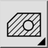
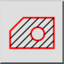

Ceci est une traduction automatique.
Barre d'outil / icône :


Menu : Dessin > Hachure > Hachure de sélection
Raccourci : H, A
Commandes : hatch | ha
Cet outil remplit une zone entourée d'entités existantes avec un motif de hachures ou une couleur unie.